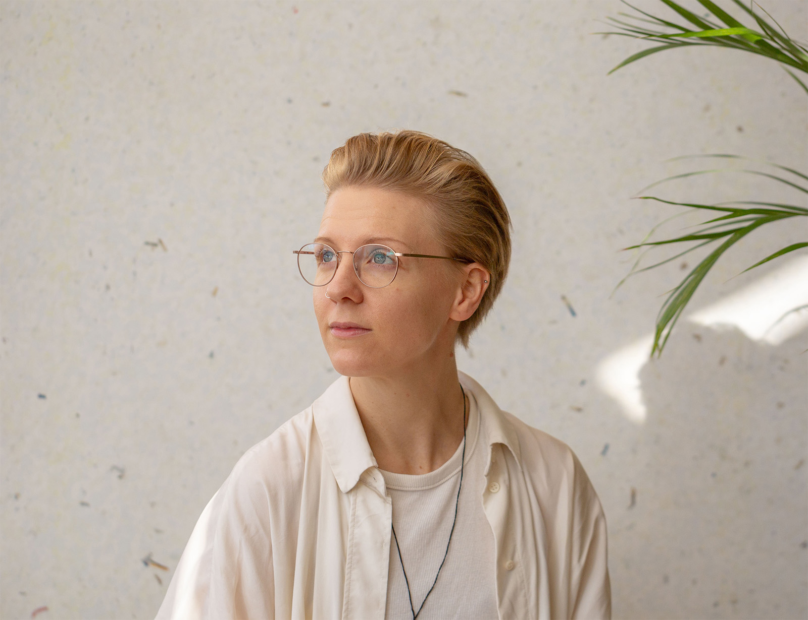

About
I'm a trained industrial designer. I founded product design and innovation agency Morrama in 2015, aged 24, and have built it into a multi-award-winning team behind products that have raised over $20 million in investment and sold tens of millions of units worldwide.
I'm also a Director of Kibu, a circular kids-tech brand, and Eco-Flo Innovations, a plastic-free diagnostics company. In 2022 I co-founded Design Declares, a not-for-profit climate initiative with chapters now active in over 54 countries.
I believe we work in an industry reliant on production and consumption — and that awareness carries responsibility. I've authored the Sustainable Design Handbook, the Startup Guide: Taking a Product to Market, and most recently From People to Planet: Lessons from a Design Agency. I've been an Associate Lecturer at the Royal College of Art and have been featured in the BBC, WIRED, Dezeen and The Times.
Clients
Logitech, Diageo, Google, Unilever, Mokobara
Features
- Dezeen Design studios should start organising running clubs
- Dezeen What on earth is regenerative design?
- BusinessGreen Sustainable product design requires holistic thinking
- D&AD Why the creative industry needs to redefine 'good'
- The Times Designers come together to fight climate change
- Core77 20 woman-led industrial design firms to know
- BBC CEO Secrets
- Creative Review My search for female industrial design role models
- About Time Top 10 women to watch in tech and STEM
- WIRED Elon Musk Does It. Sergey Brin Does It. Your Boss Might Do It.
- Fast Company The biodegradable COVID test that could be a game-changer
Talks & workshops
- 2025
- 23 MayLess is More — Design Declares
- 18 JunBritish Beauty: Unleashing market potential — MakeUp in Paris
- 24 JunMarrying Cost Pressures with Sustainability Demands — Environmental Packaging Summit
- 27 JunPractical Sustainability in Industrial Design — Design Declares
- 11 JulWhat does sustainability really mean? — New Designers
- 9 SepWaste Not, Want Not — World Design Congress
- 10 SepIdeas to Action: Workshop with Design Declares — World Design Congress
- 11 SepDesigning the Next Decade — Women in Innovation Unconference
- 14 OctInspire Circular — Tarkett
- 27 NovDesigning for a Regenerative Future (keynote) — Canada's Zero Waste Conference
- 1 DecSustainable Changemakers — Dezeen
- 9 DecCircularity Sessions — Plus X Innovation
- 2024
- 4 JulSustainable packaging design — EIT Food network
- 17 JunCo-host — Design Declares
- 11 JunSustainable design workshop — Logitech (private)
- 22 MayDesigning our way to a more sustainable future — D&AD Festival
- 29 FebDesigning for reuse — UCL
- 2023
- 5 DecDesign Transforms — Central Saint Martins
- 14 NovThe Future of Product Design — D&AD
- 17 OctDesign for Planet Festival — Design Declares goes global
- 16 SepCollective Wisdom — London Design Festival
- 25 MayTalk Design Live — Bangor University
- JanThe Challenges of Sustainability in Design — Wagamama Annual Conference (private)